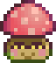

Duende del polvo (peligroso)
| Duende del polvo | |
 | |
| Información | |
| Aparece en: | Minas peligrosas |
| Niveles: | 40-79 |
| Matable: | Si |
| PV base: | 280 |
| Daño base: | 13-15 |
| Defensa base: | 6 |
| Velocidad: | 3 |
| Puntos de XP: | 2 |
| Variaciones: | |
| Botín: |
Si se alcanzó el fondo de las minas:
|
El Duende del polvo (peligroso) es un enemigo que se haya en las minas después de activar el Altar del desafío o durante la misión Peligro en las profundidades.
Matar espíritus de polvo (peligrosos) también cuenta para la tarea de objetivo de erradicación de monstruos de matar 500 duende del polvo.
Comportamiento
Se comportan de manera idéntica a su contraparte más débil, el duende del polvo. Al ver al jugador, se acercarán y atacarán al jugador infligiéndole daño por colisión.
Estrategia
Atraparlos contra una pared evitará que sean empujados fuera de tu alcance cuerpo a cuerpo y ahí se les da golpes repetidos. Debido a su comportamiento saltarín, es fácil para ellos acercarse a ti más rápido de lo que esperas.
Historial
- 1.5: Introducido